Architect Studies: Antoine Predock
Phase 1 - Nipomo Shelter
Media: Balsa wood, chipboard, cardboard, x-acto blade, chopper, vellum, rapido pen, color pencil.
Project: Select an architect and study the way that he or she design. Base on those information, build a outdoor shelter at the designated site at Nipomo. This will be the first part of the architect study project.
Detail: The architect selected was Antoine Predock. Due to the various design phrases that he went though in his career, I focus on his interest in merging with nature.
Rainfall pass rapidly across the site because of its location and sloped angle. I decided to turn that disadvantage into a building feature, turning the floor of the shelter into a catwalk over a concrete retainer that will fill up during the rainy season.
To merge the building with the hill even further, I sinked the building and place the flow of human traffic the way the hills is, with the stairs descending into the shelter and then descend out.
Architect Studies: Antoine Predock
Architect's Studio
Media: Model clay, balsa wood, chipboard, cardboard, x-acto blade, chopper, vellum, rapido pen, color pencil.
Project: Base on information collected during the architect studies, build the architect's studio at the designated site.
Detail: Since the site given was on a hilltop looking over a beautiful wide field, with a crossing dirt path near the edge, I decided to place the building right at the edge of the hill, behind the dirt path and partially reaching out to the scenery.
Predock's interest in clay, sky-land connection, and geometry greatly influence the design process. I focused on the use of clay model, the crossing shape by the dirt path, and the concept of connecting the hill, sky, and human interaction with the two nature element.
I begin to progress toward Predock’s interest in clay model study, sky and land connection, and geometry.
Frank Llyod Wright Building Study:
Media: Vellum and rapido pen.
Project: One of Frank Llyod Wright building is located in the local downtown at San Luis Obispo, known as the Kundert Clinic.
Examine the building, floor plan, structure, and local creek. Base on the information, redrawn the plans, then propose and design an additional structure.
Detail: Below are samples of some of the hand drafting done for the project. There were 2 sets of drawing, with one for the existing building and one for the additional. Sample from both sets can be viewed below.
Here is the draft work done for the existing building:
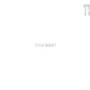
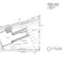
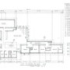
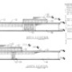
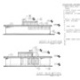
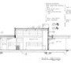
Below is the proposed addition, focusing on create a building that will merge with existing site condition and area without taking away from the original building:
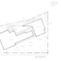
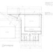
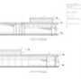
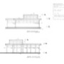
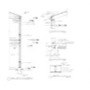
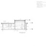
 Nature Sketcher:
Nature Sketcher:


{kind=link}
{kind=link}
{kind=link}
{kind=link}
{kind=link}
{kind=link}
{kind=link}
{kind=link}
{kind=link}
{kind=link}
{kind=link}
{kind=link}
{kind=link}